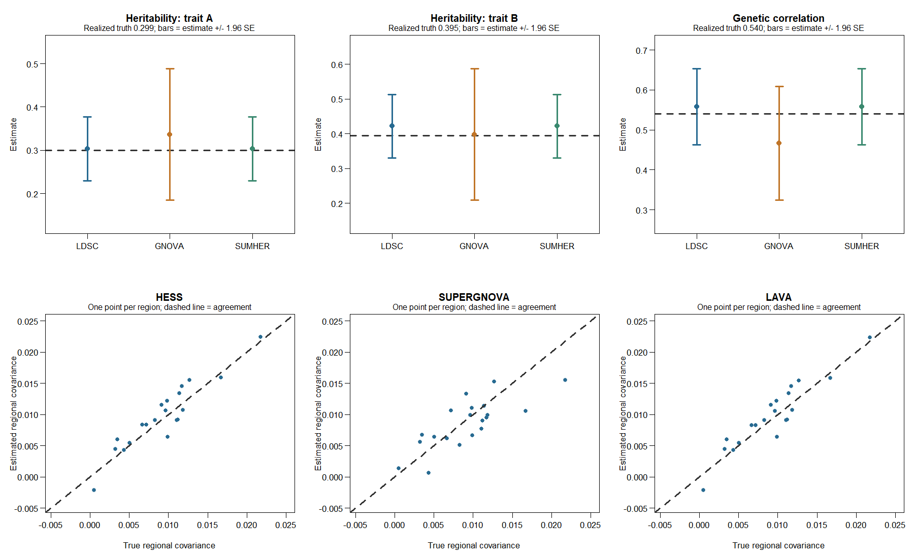
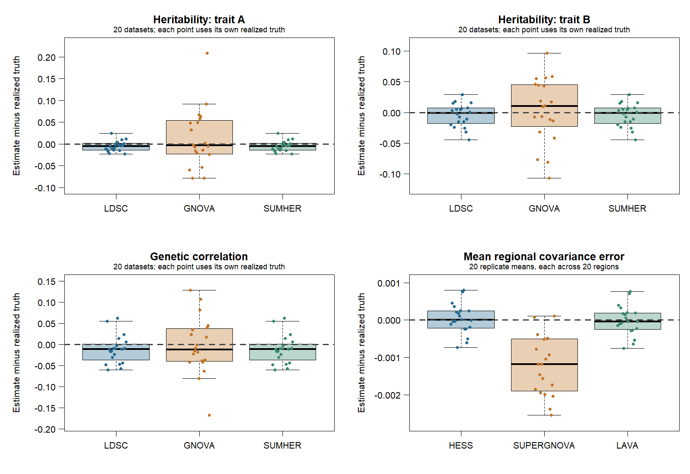

gcorr method comparison: simulated results
One dataset, six methods
This example connects gsim, LD preparation and gcorr in one short run. The first example demonstrates that the methods run on common inputs and produce sensible estimates. A small extension below repeats the same design on 20 new datasets. There is no parameter search or seed selection.

The top panels show estimates with estimate ± 1.96 jackknife SE bars. These are illustrative normal-approximation intervals, not a coverage evaluation. Each lower panel contains the same 20 regions, with identical axis limits. Regional panels show point estimates; they do not imply that uncertainty is zero.
Simulation settings
| Setting | Value |
|---|---|
| Traits | Two continuous traits, A and B |
| GWAS sample size | 10,000 per trait; disjoint samples |
| Independent LD reference | 4,000 individuals from the same generator |
| Markers | 600, arranged in 20 independent regions of 30 |
| Genotypes | Binomial dosages, allele frequency 0.3, copy-or-redraw correlation within regions |
| Within-region LD | Adjacent-marker correlation ranges from 0.15 to 0.85 across regions |
| Effects and phenotypes | gsim 0.9.0; all markers have normally distributed additive effects |
| Target h2 / effect correlation | 0.30, 0.40 / 0.60 |
| Seed | 20260915 for the generator; 20260916 for gsim |
The small script supplies correlated genotypes to gsim(W = ...); gsim generates the effects and phenotypes. This artificial LD construction is not a demographic simulation. It provides differing LD scores without reference data downloads. Marginal regressions are calculated separately in the two disjoint GWAS samples. Their t statistics are supplied as z statistics, using the large-sample approximation. All marker identities and allele directions are aligned by construction; no harmonization is needed for this generated example.
The reference is prepared once as a separate LDlist, saved and reloaded. All three regional methods reuse its cached eigensystems. LD files remain unchanged during fitting. Every within-region correlation is retained; regions are treated as independent chromosomes for LD preparation.
What counts as truth?
The effect draw does not have to reproduce its generating correlation exactly. For this draw, the population h2 values are 0.299 and 0.395, and the genetic correlation is 0.540, rather than the generating value of 0.60.
Truth is calculated from the realized gsim effects and the known population covariance of the genotype generator, not from the estimated reference LD. After converting standardized effects to raw-dosage effects, for region \(r\):
\[ G_r = B_r^\mathsf{T}\Sigma_r B_r, \qquad (\Sigma_r)_{jk}=2(0.3)(0.7)\rho_r^{|j-k|}. \]
The regions are independent, so \(G=\sum_r G_r\). Total phenotypic variances combine its diagonal with gsim’s residual variances. Regional covariance is scaled by the square root of the two total phenotypic variances; it is not a within-region genetic correlation. The script also checks that the effect conversion reproduces gsim’s individual genetic values.
Results
| Method | h2 A (SE) | h2 B (SE) | rg (SE) |
|---|---|---|---|
| Realized population truth | 0.299 | 0.395 | 0.540 |
| LDSC | 0.303 (0.038) | 0.422 (0.046) | 0.558 (0.048) |
| GNOVA | 0.337 (0.077) | 0.398 (0.096) | 0.466 (0.073) |
| SumHer | 0.303 (0.038) | 0.422 (0.046) | 0.558 (0.048) |
LDSC uses a fixed marginal intercept of one. Cross-trait sampling intercepts are fixed at zero because the samples are disjoint. SumHer uses a single baseline architecture and ordinary LD scores as explicit tagging weights. Its near-identical results to LDSC here should not be generalized to other architecture or intercept settings. The 20 regions are also the jackknife blocks; this small number limits interpretation of the uncertainty bars.
HESS/rho-HESS and LAVA use all retained regional components in this example; SUPERGNOVA uses its supported default component selection. The three methods estimate the same regional covariance target, with different estimation rules. HESS and LAVA closely track each other in this draw. SUPERGNOVA shows more scatter, including a lower estimate in the region with the largest true covariance. One draw cannot establish bias or rank the methods.
| Analysis | Fit calls | Observed elapsed time |
|---|---|---|
| LDSC, both h2 and rg | 2 | 0.83 s |
| GNOVA, both h2 and rg | 2 | 0.74 s |
| SumHer, both h2 and rg | 2 | 0.81 s |
| HESS/rho-HESS, 20 regional covariances | 1 | 0.55 s |
| SUPERGNOVA, 20 regional covariances | 1 | 0.53 s |
| LAVA, 20 regional covariances | 1 | 0.56 s |
Times are single observations on the development laptop, including the R interface and result assembly, excluding simulation and LD preparation. They are not a performance benchmark. LD preparation uses one thread.
All nine fit calls returned, all requested estimates were finite, and the result tables reported no out-of-range flags. All 60 regional fits reused cached eigensystems. HESS and SUPERGNOVA return regional covariance SEs; the current LAVA covariance call does not return estimator SEs. That missing uncertainty remains explicit in the saved results and diagnostics.
Twenty additional datasets
The same design was repeated on 20 new seeded datasets, regenerating genotypes, effects, phenotypes and the independent LD reference each time. Seeds were fixed in advance as 20260915 + 100 * (1:20); none were selected or discarded based on results. Every error uses that replicate’s own realized population truth. These are not repeated fits of the first dataset.

Each genome-wide panel has 20 points per method. The regional panel shows one mean error per replicate, averaging its 20 regions. This exposes a systematic shift but can hide offsetting regional errors; the regional RMSE below therefore uses the individual region errors. The 400 regions are not treated as 400 independent simulation replicates.
| Method | Quantity | Mean error | RMSE |
|---|---|---|---|
| LDSC | h2 A | -0.0051 | 0.0126 |
| LDSC | h2 B | -0.0044 | 0.0188 |
| LDSC | rg | -0.0119 | 0.0344 |
| GNOVA | h2 A | 0.0129 | 0.0670 |
| GNOVA | h2 B | 0.0041 | 0.0513 |
| GNOVA | rg | -0.0032 | 0.0656 |
| SumHer | h2 A | -0.0051 | 0.0126 |
| SumHer | h2 B | -0.0044 | 0.0188 |
| SumHer | rg | -0.0119 | 0.0344 |
| HESS/rho-HESS | Regional covariance | 0.000032 | 0.002000 |
| SUPERGNOVA | Regional covariance | -0.001219 | 0.004099 |
| LAVA | Regional covariance | -0.000010 | 0.001985 |
Here mean error is the average of estimate minus truth; RMSE is the square root of the mean squared error. Genome-wide rows contain 20 estimates each; regional rows contain 400 estimates each across 20 datasets. Their units differ, so RMSE should be compared within the same quantity.
In this simple architecture, LDSC and SumHer remain almost identical and GNOVA shows greater variability. HESS and LAVA have small average regional errors. SUPERGNOVA shows a negative average regional covariance error and larger RMSE with its current default component selection. The comparison does not determine whether that difference comes from component selection, finite reference LD or another method assumption. It warrants a focused check before making a general claim about relative accuracy; no settings were tuned here.
Availability and exploratory interval coverage
All 180 fit calls returned, and all 1,380 expected point estimates were finite, with no result-table out-of-range flags. The 1,200 regional results reused cached eigensystems. One HESS covariance SE (replicate 6, region 18) was unavailable because its joint uncertainty calculation requires positive semidefinite estimated genetic and residual matrices. Its point estimate remains in the error summaries. LAVA covariance SEs were unavailable throughout because that output is not implemented for this call.
For intervals formed as estimate ± 1.96 SE, coverage was:
| Method | h2 A | h2 B | rg | Regional covariance |
|---|---|---|---|---|
| LDSC | 20/20 | 20/20 | 20/20 | — |
| GNOVA | 18/20 | 18/20 | 20/20 | — |
| SumHer | 20/20 | 20/20 | 20/20 | — |
| HESS/rho-HESS | — | — | — | 375/399 available intervals |
| SUPERGNOVA | — | — | — | 383/400 |
| LAVA | — | — | — | Unavailable |
These are descriptive counts, not a calibration certificate. Twenty datasets give coarse coverage estimates, regional results share datasets, and the score methods use only 20 jackknife blocks. Missing SEs are excluded from the interval denominator and reported explicitly rather than counted as covered.
The simulation run took approximately 5.4 minutes on the development laptop, including simulation, LD preparation and fitting. Average fit-call times ranged from 0.31 to 0.46 seconds. These timings are descriptive and do not constitute a controlled performance comparison.
Run it again
From the gsuite repository root, with the development packages installed:
.libPaths(c("build/r-library", .libPaths()))
source("tools/examples/run_gcorr_comparison.R")For the 20-replicate extension, use the same library setup and run:
source("tools/examples/run_gcorr_replicates.R")Replicate outputs stay in build/examples/gcorr-comparison/replicates/. Compact estimates, diagnostics, timings and provenance are retained for every replicate. The working/ subdirectory is reused for genotypes, LD and full fits, so only the final replicate’s larger files remain. The original single-run outputs are preserved. Rscript tools/examples/run_gcorr_replicates.R --summarize regenerates the summaries and figure from the saved compact results without running new simulations.
The script regenerates the same seeded dataset and replaces only its named outputs in build/examples/gcorr-comparison/. That ignored folder contains the simulation, reference files, saved LDlist, fitted objects, estimate and diagnostic tables, timings, PNG/PDF figures and a session/provenance manifest. There is one script and one output folder; no intermediate run directories.
The website displays a reviewed figure and result table. Rendering it does not run the simulation. See the saved-LD workflow and method capabilities for the broader interface and limitations.
This demonstrates a working analysis chain and provides a small repeated comparison under one deliberately simple design. The observed coverage counts do not establish general calibration, realistic genetic architecture or equivalence to every option in the original software packages.